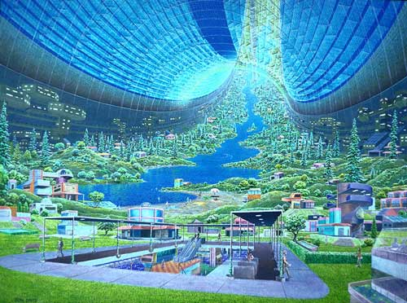

Pacifica
Population: Varies depending on the season.
Climate: Fair.
Description
Pacifica is a Class O planet located in the Taurus Reach that often is used for crewmember shore leave and diplomatic conferences, most noteably Pacifica hosted the Federation Trade Council's annual meeting in 2377, '78, and '79.
Pacifica is renowned for its warm blue waters and fine white beaches.
This planet is considered by many as the jewel of the galaxy.
RESERVE
